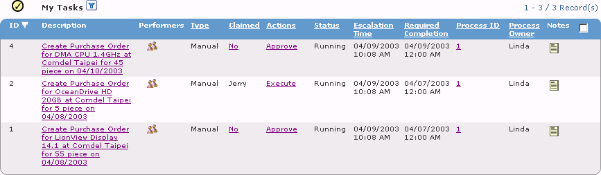
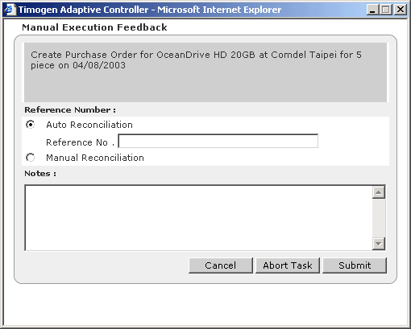

Timogen Web Site
Voice: (650) 903-9888
Fax: (650) 903-9327
info@timogen.coms
Executing Tasks
Once manual tasks have been approved, they must be executed. While that execution takes place outside the Timogen Adaptive Controller system, its completion should be recorded within the Timogen Adaptive Controller system.
To execute a task1 In the Functions drop-down list, select Business User.2 Click the Execution tab, then click Tasks. The Tasks page appears.Manual tasks that have been approved and are awaiting execution have an Execute link in the Actions column.3 Click the Execute link for the task you have executed. The Manual Execution Feedback dialog box appears.4 Select a Reference Number option:5 Optionally enter a note.6 Click Submit.7 In the confirmation dialog box, click OK.The task status will change to Completed.
|
|
Timogen Systems Timogen Web Site Voice: (650) 903-9888 Fax: (650) 903-9327 info@timogen.coms |